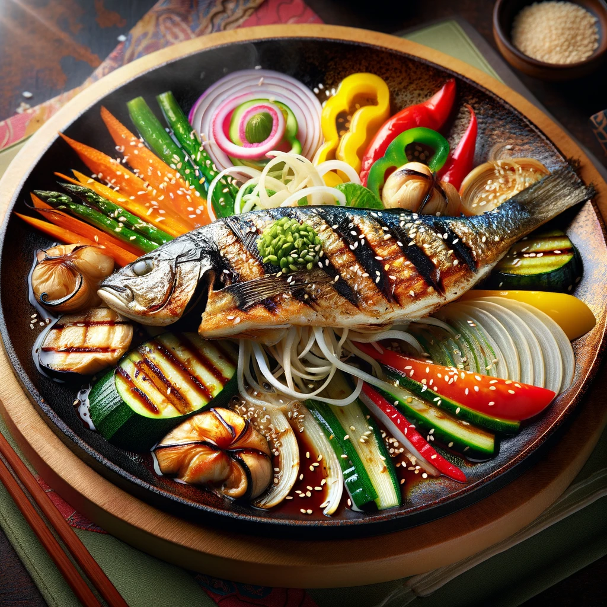

Fish Teppanyaki Recipe
Description
Fish Teppanyaki is a classic Japanese dish that features a beautifully grilled piece of fish, usually served with an assortment of vegetables.
The fish is cooked on a teppan, a flat iron griddle, which gives it a distinctive taste and texture.
The dish is often garnished with sesame seeds and a light soy-based sauce, enhancing its flavors and making it a delight for the senses.
This meal is perfect for those who appreciate the art of Japanese cooking and the subtle interplay of flavors and textures.
Ingredients
- 1 fillet of your preferred fish (e.g., salmon or seabass)
- 1 tablespoon of soy sauce
- 1 tablespoon of mirin
- 1 teaspoon of sesame oil
- 1/2 teaspoon of grated ginger
- Assorted vegetables (e.g., bell peppers, zucchini, onions, and mushrooms)
- Salt and pepper to taste
- Sesame seeds for garnish
Steps
- Preheat the teppan (iron griddle) over medium-high heat.
- Season the fish fillet with salt and pepper.
- In a small bowl, mix together soy sauce, mirin, sesame oil, and grated ginger.
- Lightly oil the teppan, then place the fish fillet and vegetables on the griddle.
- Cook the fish for 3-4 minutes on each side, or until it is cooked through and has a nice sear.
- Halfway through cooking, brush the fish and vegetables with the soy sauce mixture.
- Once cooked, transfer the fish and vegetables to a plate.
- Garnish the fish with sesame seeds and drizzle with any remaining soy sauce mixture.
- Serve hot and enjoy your homemade Fish Teppanyaki.